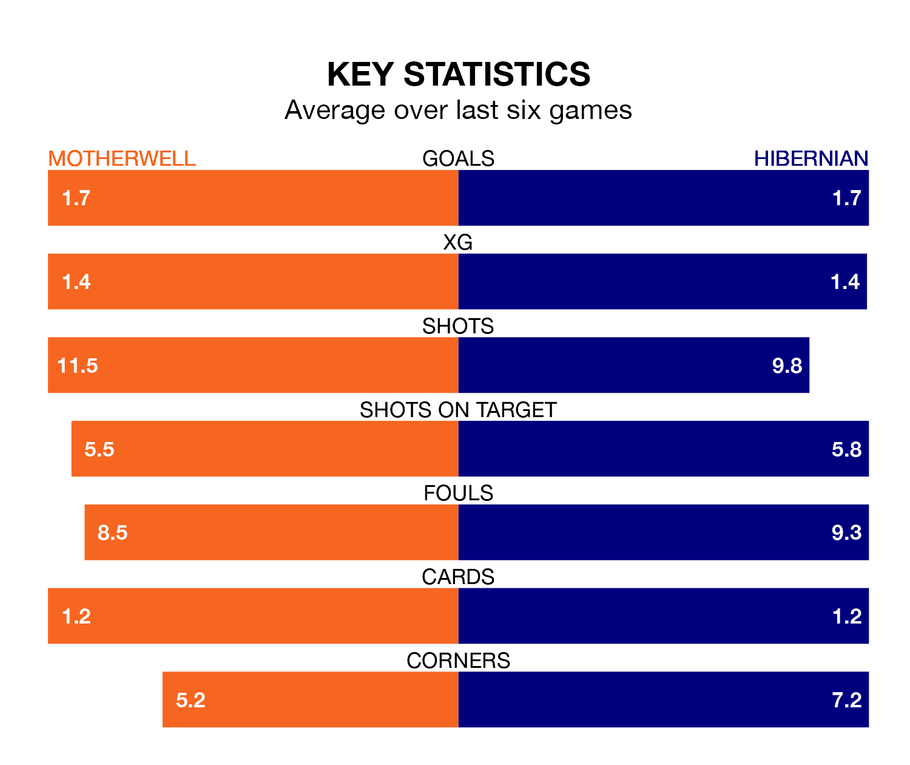

Hibernian travel to Motherwell on Saturday in the Premiership.
The visitors come into the game on the back of a defeat in their last match, having lost to St. Johnstone 2-1 at home, with a goal from Christopher Cadden.
Motherwell, meanwhile, won their last match, 3-2 against Dundee, with their goals scored by Moses Ebiye, Thelonius Bair and Georgie Gent.
With 45 goals in 32 games so far this season, Motherwell are the league's third-highest scorers with 1.4 goals per game. But they are conceding more than average too, letting in 50 goals at a rate of 1.6 per game.
Hibernian, meanwhile, are average scorers, with 1.3 goals per game. They have conceded 1.6 goals per game.
In the last 10 years, Motherwell and Hibernian have played each other on 22 occasions. Motherwell won five of them, Hibernian 10, and they drew seven times.
On average, Motherwell scored 1.1 goals and Hibs 1.5 in those matches.
Their last meeting was on January 2, when they played out a 2-2 draw.
In Bair, the hosts have one of the league's most on-form strikers so far this season. He has notched 13 goals in 32 appearances, to sit fourth in the scoring charts.
His goal rate of one every 162 minutes is slightly quicker than that of Myziane Maolida, Hibs's top scorer with a goal every 146 minutes, and a total of six goals in 12 games.
Motherwell are eighth in the table after 32 games, of which they have won eight and drawn 12, earning 36 points.
The away team are one place ahead of Motherwell in seventh, with nine wins and 11 draws putting them on 38 points.
The home side are in mixed form in the Premiership, with three wins and a draw from their last six games.
With two wins and two draws over that period, Hibernian's form is slightly worse – they have taken eight points from 18, compared to Motherwell's 10.
Updated: 11:20 (UTC), 09/04/24